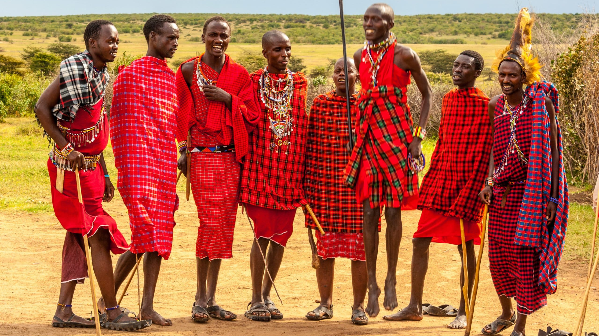
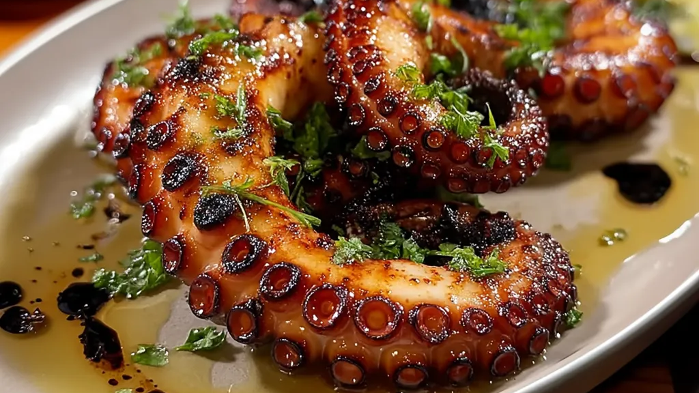

Wyspa, która zachwyca kolorami


Zanzibar to nieprawdopodobny błękit Oceanu Indyjskiego. Woda wygląda tak nierealnie, jakby ktoś rozpuścił w niej niebieską farbę. Jeśli kiedykolwiek istniał raj, to musiał wyglądać jak ta wyspa. Ocean jest tu krystalicznie czysty, nawet z łodzi widać na dnie rozgwiazdy. Zatoka Menai to rezerwat bajecznie kolorowych ryb: wargacze zwane papugorybami, błazenki, skrzydlice, ustniczki, płaszczki, ale też homary, mątwy, kraby, krewetki, gąbki, jeżowce oraz łagodne rekiny białe. To idelane miejsce do nurkowania, co można robić godzinami i nigdy nie mieć dosyć.
Co kupić?

Od rodowitych masajów można nabyć przepiękne rękodzieło z drewna hebanowego: miski, maski oraz zanzibarskie skrzynie. Można tu spotkać niepowtarzalne wyroby z kokosa, biżuterię oraz dekoracje wykonane z łupin. Trafnym zakupem będzie również aromatyczna kawa z kardamonem, lub goździkami oraz harbaty masala. Zwolennicy pięknych zapachów będą zachwyceni aromatycznymi olejkami oraz wyrobami z aloesu.
Tanzańska kuchnia
Kuchnia Zanzibaru to egzotyczna mieszanka smaków suahili, arabskich i indyjskich opratych na świeżych owocach morza koksach i przyprawach. Najważniejsze przysmaki to pweza wa nazi - ośmiornica w mleku koksowym, pizza zanzibarska, szaszłyki mishkaki oraz aromatyczny ryż pilau. Obowiązkowo należy spróbować ulicznych przekąsek jak mandazi - lokalne pączki i urojo - egzotyczna zupa ziemniaczana.

Stone Town
To jedno z najstarszych miast wschodniej Afryki oraz kulturalne centrum wyspy. Domy zostały wzniesione z lokalnych kamieni przez arabskich handlarzy. Koniecznie trzeba zwiedzić kręte i wąskie uliczki centrum, liczne bazary i tradycyjne, kolonialne rezydencje, gdzie przenikają się wpływy hinduskie, muzłumańskie i afrykańskie.
Prison Island
Wyspa Więzienna znana również jako Changuu Island, to malownicza wyspa słynąca z żółwi olbrzymich z Seszeli. To idealne miejsce na spotkanie ze żółwiami mającymi ponad 100 lat. Można je karmić i głaskać. Na wyspie znajduje się też budynek dawnego więzienia - obecnie hotel, plaża i piękna rafa koralowa wokół wyspy. Wyspa jest pod ochroną, a żółwie pod ścisłym nadzorem.
Nurkowanie
Nurkowanie na Zanzibarze to całoroczna atrakcja z krystalicznie czystą wodą i bogatą rafą. Najlepsze miejsca to atol Mnemba oraz okolice Nungwi i Kendwa na północy. Najlepsza widoczność występuje od czerwca do października oraz od stycznia do lutego. Miejsca te słyną z dużych żółwi zielonych, ławic kolorowych ryb, a czasem delfinów. Wody znane są z pięknych ogrodów koralowych i bogactw mniejszych stworzeń np. ośmiornice.